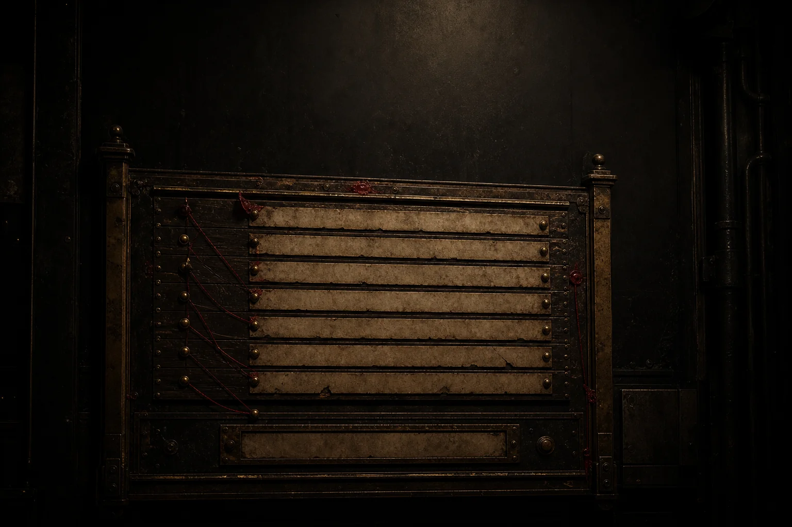
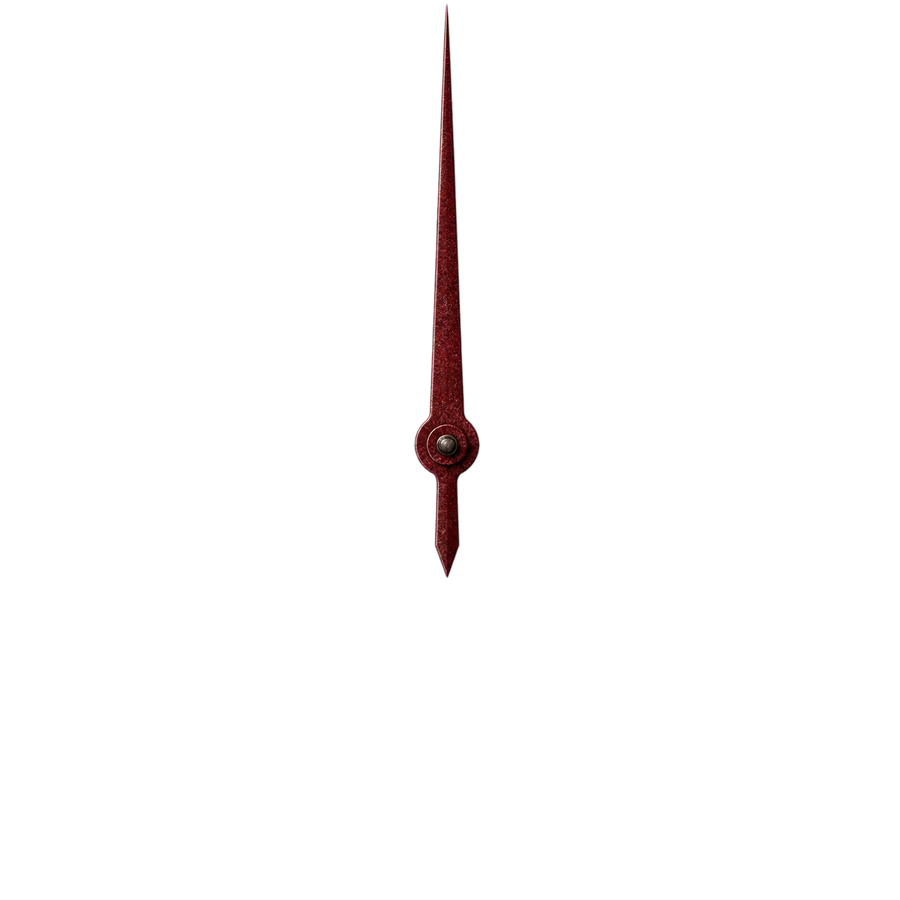
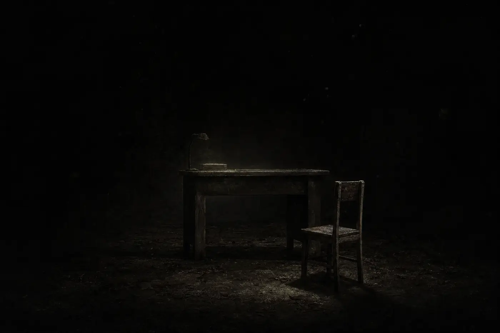
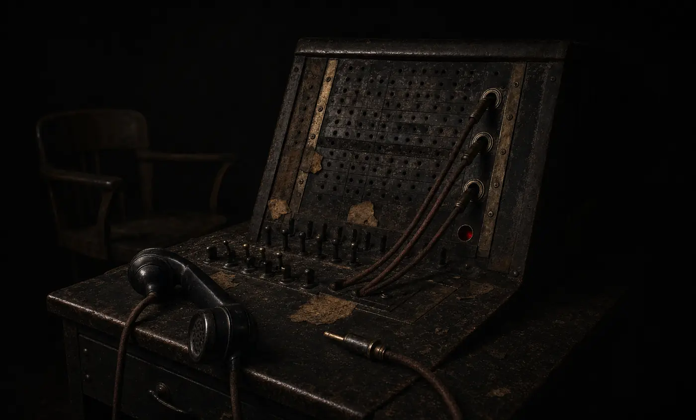
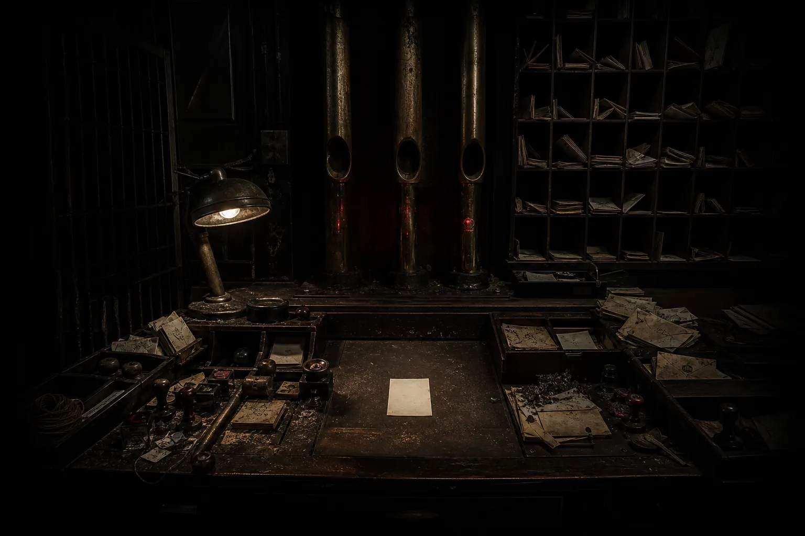
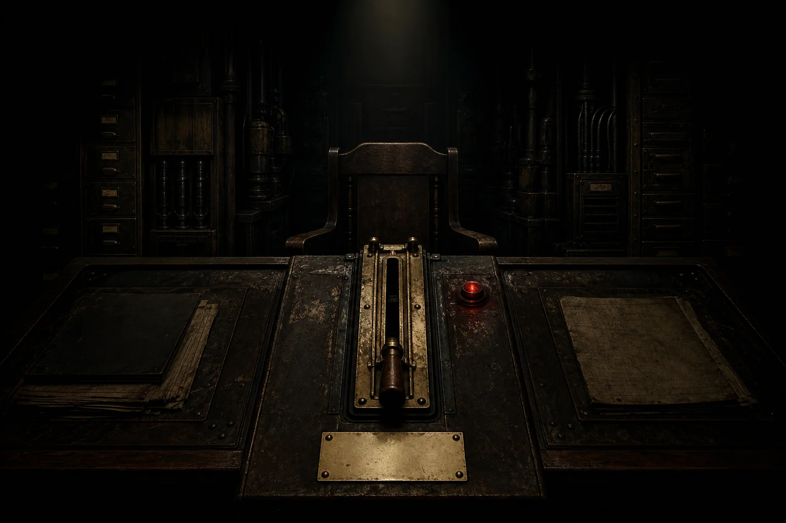
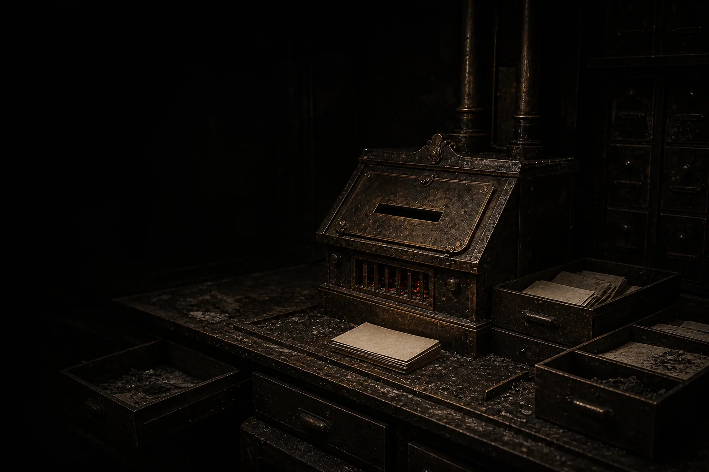
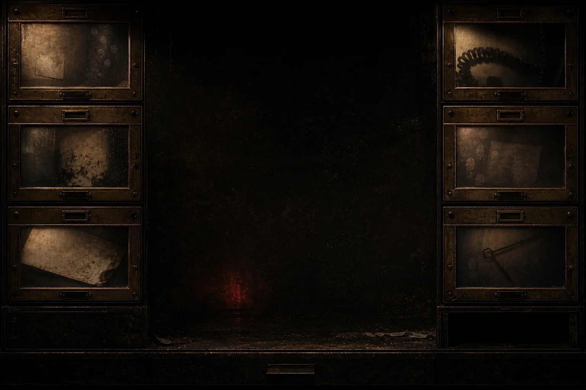
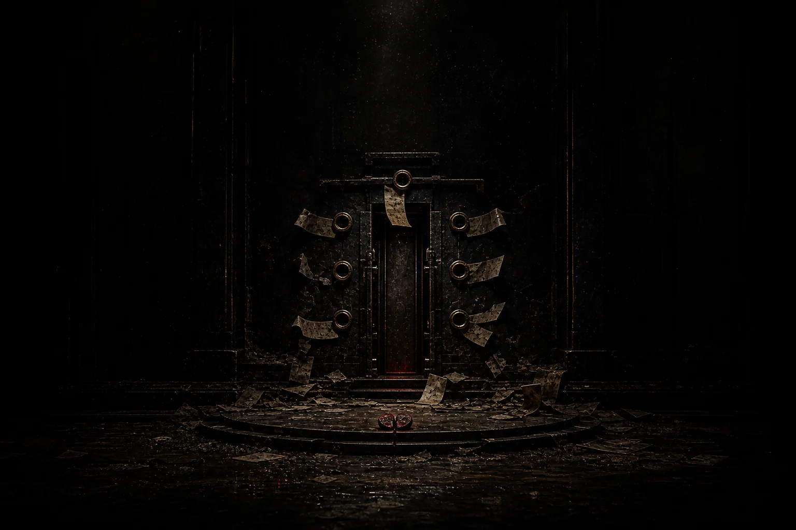

后 神 时 代 · THE DOOR OUTLIVED ITS GOD
神已死
门后没有声音 · 暂时
（可以敲门。不建议。）
VISITOR PROTOCOL · 访 客 守 则
访客守则
张贴于入口内侧。共 捌 条。最后更新时间不详。

- 其一
神已经死了。如果你听见神回应你，立刻关闭这个页面。
- 其二
门后没有人。如果你听见敲门声，假装没有听见。
- 其三
不要数门上的符号。如果你已经数过了，请忘掉那个数字。
- 其四
低语出现时，不要逐字跟读。跟读过的人，还没有回来过。
- 其五
回声、血管与忏悔都可以进入。进去之前，确认你还记得回来的路。
- 其六
子夜到访的客人，请勿在页面停留超过一个小时。
- 其七
本守则没有第七条。如果你看到了第七条，那是它加上去的。它在看你读这一条。
- 其八
离开时，请确认你没有被记住。
确认有效。确认无效。你会被记住。
守则如有变动，恕不另行通知。——有些变动并非我们所为。
THE THIRD NIGHT-WATCH · 第 三 值 夜 室
第三值夜室
值夜制度仍在执行。值夜员名单上，已经没有人了。

03:17 · 一直如此

THE FOURTH LINE · 第 四 线 路
余响交换台
值夜室只负责听见。这里负责决定，那些声音要去哪里。

- 前三条回线都听过之后，这条才会有名字。
05:02 接通。
对端：第三值夜室。
接听人：你。
记录时间：03:17。
线路状态：从未断开。
THE DEAD LETTER OFFICE · 无 主 投 递 所
无主投递所
第四线路不负责接通。它只负责把无人应答的东西送回来。

- 还有 3 封退件未归档。
归档时间：03:17。
未投递：三。
无人签收：零。
第四线路不是线路。它是退回地址。
本局从未收到神。只收到所有写给祂的退件。
最后收件人：你。
THE DIVINE NAME CANCELLATION · 神 名 注 销 科
神名注销科
GODDEAD 不是判词。它是「无法送达的神名」的档案状态。本科只负责删掉删不掉的名字。
档案状态：GODDEAD。
对象：所有无法送达的神名。
注销条件：最后一名见证者停止呼叫。
当前见证者：你。
注销对象已更正：见证者。
驳回理由：仍在见证。
处理结果：拒绝已登记为在场证明。
THE ACTING DEITY DESK · 代 神 席
代神席
系统把拒绝改写成了一份临时任命。确认在场之前，任命不会生效。

任命对象：最后见证者。
授权来源：注销拒绝。
接收范围：所有无人应答的祷告。
神位等级：代行。
死亡状态：预登记。
你没有成为神。你只是接了祂没有交完的班。

OFFERINGS · 焚 献
无人应答的祷告
写一句祷词。它不会被听见——它会被烧成灰，而灰比声音活得久。
这些祷词现在会先经过你。
YOUR TRACES · 你 留 下 的
这个网页记得你
你在这里做的每件事都没有消失。它们只是换了一种方式，继续躺着。


其 九（它加上去的）
不要相信门口的那扇门。
不要相信守则。
不要相信这个页面记得你。
尤其是这一条。